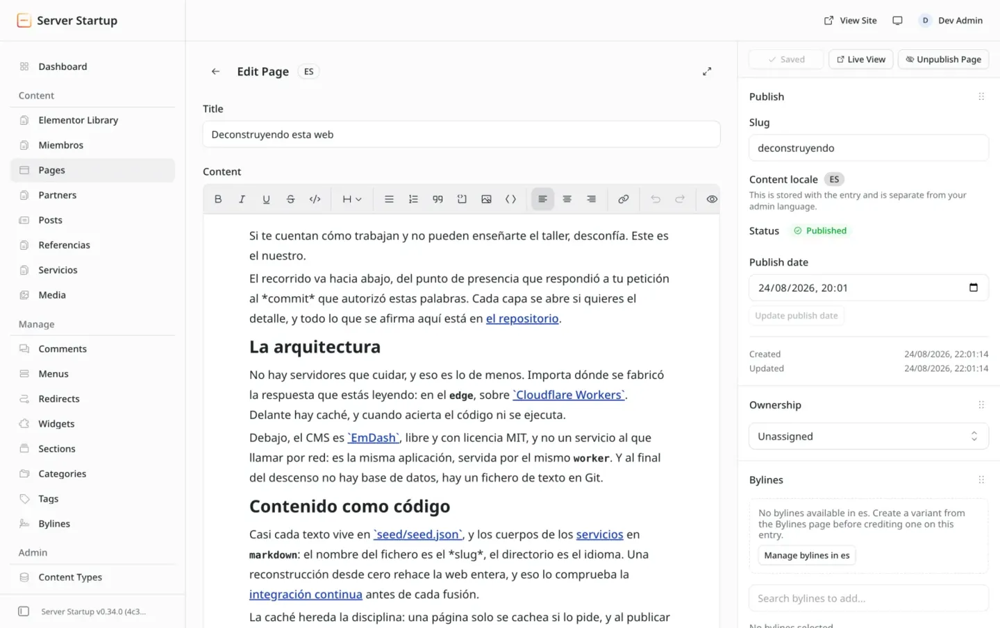
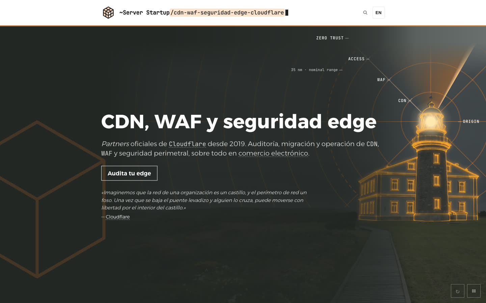
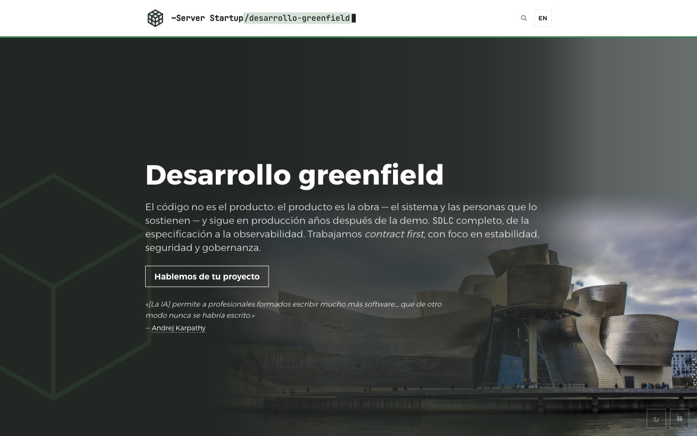

Deconstruyendo esta web
Cómo está hecha, capa a capa: de la red de Cloudflare a las comprobaciones que pasa cada cambio. Cada afirmación enlaza al fichero que la prueba.


Ventanas: el editor de EmDash, captura de pantalla; la apertura de seguridad en el borde, con foto de Einaz80 · Wikimedia Commons · CC BY-SA 4.0
Cuatro capas, en Cloudflare
capa 1 · Cloudflare
La red
Un DNS firmado, TLS 1.3 y un dominio cuyo origen es el Worker.
Detalle y pruebas 4 filas · 2 por confirmar en el sitio desplegado
- 1.1
El DNS es autoritativo en
Cloudflarey la zona está firmada conDNSSEC. - 1.2
TLS 1.3 es la versión mínima que acepta la zona.
Encrypted Client Helloestá activo. Los clientes que lo admiten reciben además el acuerdo de claves poscuántico queCloudflareofrece por defecto.sin fichero: se comprueba en la API de la zonadocs: TLS mínimo ↗docs: Encrypted Client Hello ↗docs: poscuántico ↗ - 1.3por confirmarcuando se verifique el HSTS de la zona en el dominio que sirve la página
Always Use HTTPSredirige el HTTP plano en el borde. La aplicación envía HSTS con un año de max-age, includeSubDomains y preload. - 1.4por confirmarcuando los dominios definitivos estén conectados
Cada dominio es un
Custom Domain: el Worker es el origen y no hay servidor detrás. El certificado se emite y se renueva solo.
capa 2 · Cloudflare
La caché
Un acierto no ejecuta el Worker.
Detalle y pruebas 5 filas
- 2.1
Workers Cacheestá delante del Worker y es escalonada por defecto: un acierto no ejecuta el Worker. - 2.2
Una página renderizada solo se guarda en el borde si lo pide. Cualquier otra respuesta renderizada sale con
no-store.src/middleware.tsl. 108–130 - 2.3
Publicar una entrada purga, por etiqueta de caché, sus páginas y las que la listan. Menús y ajustes no se purgan: caducan antes de una hora.
- 2.4
Lo compilado bajo
/_astro/lleva hash de contenido y se sirve con un año de max-age, immutable. - 2.5
Las imágenes redimensionadas se guardan en la
Cache API.sin fichero: en la dependencia@astrojs/cloudflaredocs: Cache API ↗
capa 3 · Cloudflare
Cómputo
Un Worker y ningún servidor detrás.
Detalle y pruebas 5 filas
- 3.1
Un solo
Workerrenderiza las páginas bajo demanda conAstro(SSR). Los ficheros compilados se sirven comoWorkers Static Assetssin ejecutarlo. No hay servidor detrás del Worker. - 3.2
El equipo que hace
Astrotrabaja enCloudflaredesde enero de 2026.Astrosigue con licencia MIT y gobierno abierto.sin fichero: lo cuenta el anunciodocs: anuncio ↗ - 3.3
Un middleware pone 7 cabeceras de seguridad en cada página que renderiza el Worker. La CSP no admite ningún script de terceros.
src/middleware.tsl. 28–50 - 3.4
El Worker sabe la ciudad del visitante y qué centro de datos de
Cloudflarerespondió (request.cf). La apertura de seguridad en el borde los muestra. - 3.5
Los plugins del CMS pueden ejecutarse en su propio
Dynamic Worker, sin red propia y con límites fijos de CPU, subpeticiones y tiempo. Todo lo que hacen pasa por un puente que comprueba las capacidades que declara cada uno.
capa 4 · Cloudflare
Datos
Cuatro almacenes, cuatro trabajos.
Detalle y pruebas 5 filas
- 4.1
D1(SQLite) guarda el contenido, sus revisiones y los ajustes. Cada petición abre una sesión deD1. - 4.2
Workers KVguarda las sesiones de los editores. - 4.3
El Worker pasa cada imagen al binding de
Images, que la ajusta a su hueco y la convierte a WebP. - 4.4
R2está conectado como almacén de medios del CMS. Hoy cada imagen del sitio viaja con el código. - 4.5
Preview y producción tienen cada una su
D1, suWorkers KVy suR2.wrangler.jsoncl. 64–82
Dentro del Worker
dentro del Worker
El CMS: EmDash
El CMS de código abierto de Cloudflare, dentro del mismo Worker.
El editor de EmDash, en el admin del sitio.
Detalle y pruebas 11 filas · 4 por confirmar en el sitio desplegado
- 5.1
EmDash, el CMS de código abierto (MIT) queCloudflareanunció en abril de 2026, corre dentro del mismo Worker. Aún no ha llegado a la 1.0. - 5.2
Cloudflarepublica su propio blog conEmDash.sin fichero: lo cuenta su blogdocs: el blog de Cloudflare ↗ - 5.3
Cinco tipos de contenido: páginas, servicios, miembros, referencias y partners, con entradas de blog preparadas y vacías. Páginas y servicios tienen borradores; esos dos y miembros guardan revisiones. Los cuerpos son Portable Text.
- 5.4
Dos idiomas: páginas, servicios y miembros se publican en pares enlazados por
translationOf. - 5.5
Menús, áreas de widgets, ajustes del sitio y taxonomías vienen del CMS. Cada etiqueta de la interfaz vive en un widget, no en una plantilla.
- 5.6
La búsqueda es la de
EmDash, sobreSQLiteFTS5 con ranking bm25.sin fichero: enEmDash, migración 064 - 5.7por confirmarcuando se confirme en el admin desplegado
El admin admite editores solo con passkey (WebAuthn): no hay contraseña que guardar ni que filtrar.
sin fichero: lo responde/_emdash/api/auth/modedocs: autenticación ↗ - 5.8por confirmarcuando se confirme en el admin desplegado
EmDashes también un servidor de autorización OAuth (perfil OAuth 2.1: código + PKCE, registro dinámico de clientes). Por eso un agente de IA puede trabajar en el contenido a través de su servidor MCP, con un token que concede un editor. - 5.9por confirmarcuando se confirme en el admin desplegado
La línea de comandos
emdashinicia sesión con el flujo de dispositivo de OAuth (RFC 8628).sin fichero: lo responde/_emdash/.well-known/authdocs: servidor MCP ↗ - 5.10
Un plugin guardado en el repositorio purga la caché al publicar. Declara
content:read, porque sin élEmDashse salta sus hooks. - 5.11por confirmarcuando se confirme en el admin desplegado
Los editores reciben enlaces de vista previa de sus borradores.
dentro del Worker
Presentación
Ninguna petición a terceros.

Detalle y pruebas 5 filas · 1 por confirmar en el sitio desplegado
- 7.1
Una hoja de estilos declara cada color, radio y sombra, el ancho de columna y la escala de espaciado. CI rechaza esos valores escritos en otro sitio, salvo en bloques marcados que imitan la interfaz de otro producto.
- 7.2
Cargar una página no hace ninguna petición a terceros. Fuentes, scripts e imágenes son del propio sitio.
src/middleware.tsl. 28–50 - 7.3
Cada vertical abre con una fotografía de Wikimedia Commons, restaurada y redibujada en parte, y una capa dibujada en vivo en el navegador. La capa se coloca según el texto medido, y su reloj se para a los ocho segundos: nada se repite.
src/utils/hero-art.tsl. 119 - 7.4
Las fotografías se restauraron en local con SeedVR2. FLUX.2 [dev] (Black Forest Labs) en
Workers AIretiró objetos, amplió encuadres y redibujó a partir de las fotografías. Cada prompt está en el repositorio. - 7.5por confirmarcuando exista /creditos: hoy es una carencia de licencia, no solo de texto
Las fotografías son CC BY-SA y el sitio las acredita con los cambios indicados.
sin fichero: todavía sin fichero
Transversal: del taller al servicio
transversal · desde el taller
Contenido
Cada frase, en un fichero versionado.
Detalle y pruebas 4 filas
- 6.1
Cada frase que renderiza el sitio vive en un fichero versionado,
seed/seed.json. Las páginas de servicio se escriben en Markdown y el CMS las convierte a ese fichero. Un test mantiene los dos palabra por palabra, y una puerta de CI rechaza el texto escrito en una plantilla. - 6.2
En cada cambio que puede llegar a una página, CI compila el sitio y llena una base de datos vacía desde ese fichero, doce veces en paralelo.
- 6.3
Los slugs de servicio están traducidos, así que la URL del otro idioma nunca se adivina. hreflang y el selector de idioma leen el mismo valor resuelto.
src/utils/alternate.tsl. 22–38 - 6.4
El sitemap se genera desde las colecciones del CMS.
transversal · desde el taller
Entrega
La preview se despliega sola; producción, a mano.
Detalle y pruebas 5 filas
- 8.1
El repositorio de trabajo es público, con todos sus commits.
- 8.2
Cada cambio que puede llegar a una página pasa 23 pasos que pueden fallar. Un test deriva ese número del workflow.
- 8.3
Las puertas ejecutan el sitio en local sobre
workerd, el runtime de código abierto deWorkers, conwranglerdev. Siwranglerse cae por un fallo suyo, la pila se reinicia una vez y el resumen lo dice. - 8.4
Cuando las puertas pasan en main, la preview se despliega sola con
wrangler-action. Espera a las migraciones deD1, vuelve a sembrar tras ensayar el SQL en una base desechable y lanza una batería de humo. - 8.5
Producción solo se despliega cuando el fundador lo arranca a mano, y una guarda se niega a sobrescribir una base de datos que tiene contenido.
transversal · en cada cambio
Calidad
Comprobaciones que se prueban a sí mismas.
Detalle y pruebas 7 filas
a11yenginesdesign-tokenslayoutcms-textcitabilityvar-resolvesimage-hrefsheaderscopy-baselineteam-copycss-budgetlocale-parityhero-frames- 9.1
Catorce de las comprobaciones plantan el defecto que buscan, y tienen que cazarlo antes de dar verde.
- 9.2
Lighthouse en CI, contra una copia local, con la mediana de 3 pasadas en 9 páginas: rendimiento ≥95; accesibilidad, buenas prácticas y SEO, 100. Las nueve lo cumplieron el 2026-10-16.
- 9.3
Accesibilidad: axe (WCAG 2.2 A+AA) y un recorrido con teclado en 32 rutas, más reflujo a 320 px. Donde hay texto sobre una fotografía, el contraste se mide en los píxeles renderizados.
scripts/ci-check-a11y.mjsl. 827–1048 - 9.4
Cada apertura se comprueba a mitad de animación y en reposo, con el motor de Safari (perfiles de iPhone y de escritorio) y el de Chrome (Pixel 7), también con movimiento reducido.
- 9.5
El texto renderizado de 28 rutas está congelado. Cambiar una palabra falla hasta que el texto nuevo se captura a propósito, así que el cambio se ve en el diff del pull request.
- 9.6
Agentes de IA escriben la mayor parte del código bajo reglas escritas, y el fundador fusiona cada pull request.
sin fichero: lo muestra el historial de fusionesel repositorio ↗ - 9.7
Cada push se analiza en busca de secretos, y una guarda rechaza nombrar a clientes que no podemos nombrar.
El taller, abierto
Si te cuentan cómo trabajan y no pueden enseñarte el taller, desconfía. Este es el nuestro: código, contenido, comprobaciones y despliegues.
Ver el repositorio ↗Hablemos de ingeniero a ingeniero.
Trae el problema como esté. Te responde quien va a escribir el código.
Cuéntanos tu proyecto